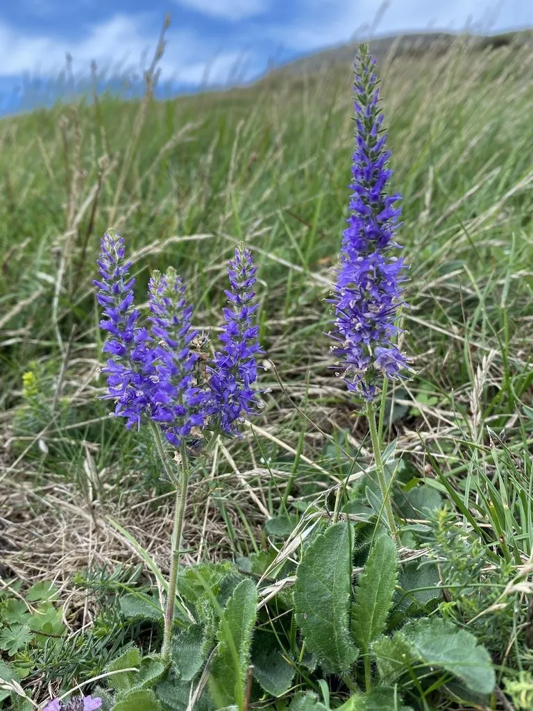

花卉与草本 · 植物界
穗花婆婆纳 Veronica spicata

车前科多年生草本，蓝紫色穗状花序细长挺拔，花期长，是花境中经典的竖线条植物，原产欧亚大陆。
- 分类
- 门被子植物门纲木兰纲目唇形目科车前科属婆婆纳属
- 栖息环境
- 欧亚草原与山地草甸，喜光、耐寒、耐旱
- 地理分布
- 原产欧洲与亚洲，中国北方山地有分布，各地庭园栽培
- 保护级别
- 暂无评估
物种志
穗花婆婆纳为车前科婆婆纳属多年生草本，株高 30–60 厘米，茎直立，多分枝。叶片披针形至线形，对生，边缘有锯齿。穗状花序顶生，细长，花小，蓝紫色或粉紫色，花期 6–8 月；果实为蒴果。
穗花婆婆纳原产欧洲和亚洲的草原与山地，喜阳光充足、凉爽干燥和排水良好的环境，耐寒耐旱，适应性强。它蓝紫色穗状花序细长挺拔，是花境中经典的竖线条植物，与圆形花头的植物搭配可增加层次，也常作切花。栽培以分株和扦插为主，花后修剪可促进二次开花，生长期保持充足光照有利于花序发育。
形态与习性
- 株高30–60 厘米，茎多分枝
- 花期6–8 月，穗状花序细长
- 果期花后结蒴果
- 光照喜充足阳光
- 水分耐旱，忌积水
- 土壤疏松、排水良好的壤土
- 繁殖分株、扦插
- 主要用途花境竖线条、切花
趣味知识
- 穗花婆婆纳的穗状花序细长挺拔，是花境的竖线条材料。
- 它原产欧亚草原，耐寒耐旱，适应性强。
- 与圆形花头的植物搭配种植，可增加花境层次。
- 花后修剪可促进二次开花，生长期需充足光照。